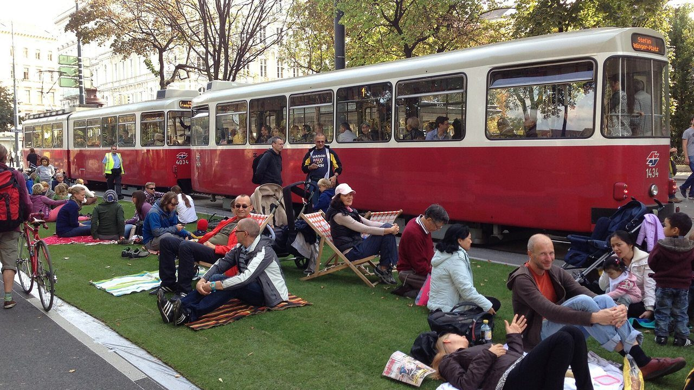

Race, Vienna Ringstrasse

Behind
Best +0:01
371W
Target 418 W-47 W
- Cadence
- 87rpm
- Heart
- 140bpm
- Speed
- 26.5km/h
Recover4 of 10
1:14
Next: · 5:00 at level 19
+0.3%
5 m climbed
4.71 km
10
Resistance / 32
Solo races your best-time ghost: position reads Ahead or Behind, and solo alone gets a Pause button. Frozen at 11:46.